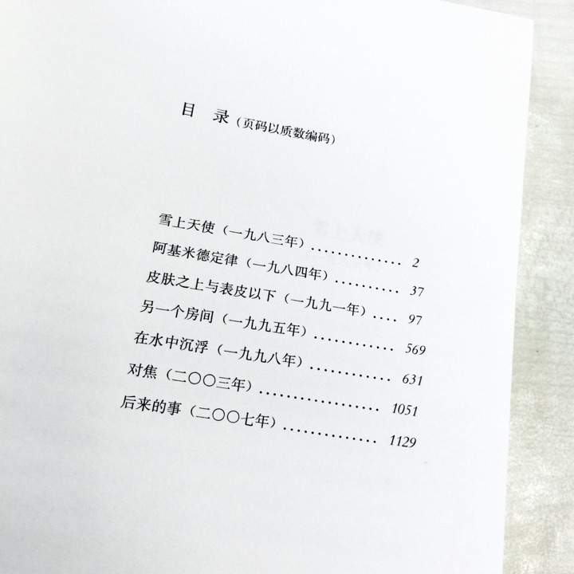

正文:
太多，想起来再补~
自恋狂#
奥斯卡王尔德先生有一年出游到美国，入境时海关问他有没有什么物品需要申报，王尔德答说:「唯一需要申报的，只有我的才华」
毒舌#
刻薄大王、厌女症患者叔本华一辈子只喜欢三件事：哲学，诋毁女人，还有骂黑格尔。同在柏林大学任教，黑格尔的课比他的受欢迎很多，叔本华便给自己的贵宾犬取名「世界精神」，其为黑格尔的哲学术语。他坚信，黑格尔比他红，是因为黑格尔是骗子；他的书卖不出去，那是因为别人看不懂。他在《论相貌》里面这么描述黑格尔:「他将凡夫俗子的嘴脸深深刻于脸上」
（翻翻《叔本华语录》，根本是段子集）
与上条有些相似：胡适在北大讲西哲，辜鸿铭路过教室，站立片刻后大骂:「西方哲学，古代以希腊为重，近代以德国为重，胡适既不懂希腊文也不懂德语，算个什么东西？」
同样刻薄的还有章太炎。后生问起他对胡适看法，他大笑道:「哲学，胡适之也配谈么？康、梁多少有些慧根，胡适之连根都没有」。又有人问起辜，章太炎摆摆手说：「辜汤生，英文，他好，国学他根本不懂」
所谓「名著」#
英国routledge出版社曾统计到不同国家地区青少年读者阅读最多的英语写作的文学作品。美国高中生读《了不起的盖茨比》最多；英国是《傲慢与偏见》；台湾读者最喜欢《简爱》；在韩国被阅读最多的则是《呼啸山庄》。
终于熬出头#
美国小说家欧茨在某年诺贝尔文学奖开奖前夕作为呼声很高的候选者之一接受采访，她说起1977年纳博科夫去世的第二天，巴塞尔姆很随意地对她说:「高兴吗？纳博科夫去世了，我们全部就上了一个档次」
读者智商#
但丁发表《地狱》后，当世人大多都以为那是他真的去地狱走了一圈回来的游记，那时代宗教气氛让读者头脑无比简单。同样的事情还有《格列佛游记》发表后很久，读者都不愿意相信这个故事是虚构的。
文学界最常见的病#
大概是肺结核。原因可想而知：深夜写作的笔杆子们离不开烟，还有不记得谁说过「作家对这世界无比敏锐的感知让他们的呼吸道也特别敏感脆弱」。总之，肺结核让《1984》成为乔治奥威尔绝笔，让济慈长诗《赫披里昂》没有结尾，让艾伦西里托从皇家空军退役从而写出《星期六晚上和星期天早上》。鲁迅，萧红，郁达夫，林徽因…后来有人将肺结核称为「优雅的文人病」。
“结核病之所以被看做文雅、精致和敏感的标志，是贵族们通过强调文化观念、身体素养层面的东西来把自己和资产阶级分离开。甚至给人产生了越少显示物质性的东西，越能体现精神的感觉。因此人们也把结核病当做一种时髦的标志”
——桑塔格《疾病与隐喻》
染毒#
- 柯勒律治离不开鸦片，他在《忽必烈汗》诗的前言里说这诗是他服了鸦片后于梦中写成的。
- 罗伯特骚塞习惯吸入一氧化二氮「笑气」之后写作
- 科幻大师菲利普迪克与垮掉之王杰克凯鲁亚克，都靠吞食安非他明活着（电影《银翼杀手》源自迪克小说《仿生人会梦见电子羊吗》）
- 巴尔扎克一天喝四十杯高浓度咖啡，有时还生吃咖啡末（那时候还没有安非他明）
- 阿道司赫胥黎写了本书叫《知觉之门》The Doors of Perception，这书讲作者服用麦司卡林这种致幻药物，借此开启感官之门。
（至于抽大麻什么的，大概不计其数吧。《牛津英国文学指南》里也有提到是瘾君子的著名作家们）
美国文学网红流派#
「垮掉的一代」（TheBeatGeneration）很多人将「beat」理解为「被打倒」，寓意这一代人的潦倒和颓丧。但其实凯鲁亚克在给自己这一代人取这个名字的时候暗藏了beat的宗教义：狂喜与重生。
老外的中文名#
何伟，白睿文，裴开瑞，高罗佩，高居翰……这是我能想起的汉学家、文艺理论家里给自己取中文名最接地气的几个=_=（不知道有多少人上高中历史时误会过费正清是中国人）
天书#
说起最艰难晦涩的文学作品，乔伊斯的《芬尼根守灵夜》通常会第一个被拿出来谈。但同一级别没那么出名的还有罗伯特布朗宁的长诗《索尔德罗》，以及乔治佩雷的惊悚小说《空缺》（据说《空缺》里他一次也没使用字母「e」，这噱头听来已经挺吓人）
译者的绝望#
说《芬尼根守灵夜》是天书吧，复旦大学中文系教授戴从容花了十年时间来翻译它，有些词真是非常为难译者。最有名的是Bababadalgharaghtakamminarronnkonnbronntonnerronntuonnthunntrovarrhounawnskawntoohoohoordenenthurnuk，100个字母拼成的「雷」，模拟雷声不断，由十多种语言组成，每一种都有其时代背景。译者找到这些字来替代，也是尽力了。
风流成性#
作家界的花花公子大诗人拜伦，与表姐奥古斯塔乱伦，性侵少年，与雪莱共妻（不是雪莱正妻，写《弗兰肯斯坦》的玛丽雪莱，而是玛丽雪莱的妹妹，她与雪莱也有过一个孩子）…除了这些韵事数不胜数，拜伦还特别装逼。他一直对外宣称自己从来不读书，作品都归功于自己才华。他死后人们才在他家书房看到满满的书和书页里的笔记。
真名#
莎士比亚时代英语处于发展中的早期现代英语，拼法很不稳定，就「莎士比亚Shakespeare」这姓氏，可查的拼法版本就有八十多种，且在莎士比亚自己留下的六次可靠亲笔签字中，没有一次拼法是完全相同的。
词汇#
关于莎士比亚的词汇量一直有很多版本的说法。直到Prof. Marvin Spevack与德国计算机专家合作，与1975年精确统计出了莎士比亚全部词汇量为29066个，还附带统计了不同词汇的使用频率等，在《哈佛莎士比亚索引大全》可查。
好吧还有个关于莎士比亚的梗是我的教授讲的，他有个朋友博士研究致力于证明莎士比亚的作品并不是他自己写的…苦于没有人相信他，此人已到不惑之年，博士还没毕业=_=
政治隐喻#
2004年本拉登公开了段视频承认恐袭，其中一段他讽刺说当他的追随者撞击双子大楼时，布什正在一所学校陪孩子们阅读《我的宠物山羊》。当时布什并没有给出回应，但2006年总统办公室公布了布什去海边度假的旅行箱，里面唯一一本书是加缪的《局外人》（书里主人公杀了个阿拉伯人）
猫#
比起狗，作家们偏爱猫。爱伦坡的有只叫Catherine的猫据说是短篇小说《黑猫》的灵感来源；法国存在主义哲学家萨特的猫叫作Nothing (虚无)；仰慕萨特的法国女作家萨冈也是猫痴；日本作家三岛由纪夫与夏目漱石，生活和作品里都有猫的参与。
（萨冈特别美）
偶像的名字#
爱伦坡全名Edgar Allan Poe，他小说里的推理模式完全超出同时代的哥特小说。江户川乱步本名平井太郎，因为仰慕爱伦坡，把笔名改为江户川乱步，日文「edokawa ranpo」的发音与「e d gar a llan poe」相似。
（爱伦坡真的特么伟大啊，现在看回他的推理悬疑小说，人格分裂，穿越，藏尸这些元素早出同类作品太多。《椭圆形画像》《威廉威尔逊》《毛格街血案》《凹凸山传说》...后来推理作家的作品好多都能看到爱伦坡的影子，包括柯南道尔）
原书名#
有些作品的原书名还挺...让人不想翻开的；
- 《傲慢与偏见》——《第一印象》First Impression
- 《一九八四》——《欧洲的最后一个人》The Last Man in Europe
- 《飘》——《拉起疲倦的负担》Tote the Weary Load
- 《了不起的盖茨比》——《跳得很高的情人》The High-Bouncing Lover
数学家与童话#
《爱丽丝梦游仙境》与《爱丽丝镜中奇遇记》的作者刘易斯卡罗尔Lewis Carroll其实作为数学家与逻辑学家的身份更为出名。他本名查尔斯路特维奇, 是牛津大学Christ Church College的数学教授。爱丽丝系列故事里隐藏了大量逻辑悖论与数学命题。
（《镜中》原著与JohnnyDepp那部电影是完全不同的故事）
一看就是geek#
意大利作家、物理学博士保罗乔尔达诺的短篇小说集《质数的孤独》书页码全是质数。
又是个geek#
物理学家费曼，读书时上英文课，让写关于赫胥黎的《一枝粉笔》的文学评论，费曼发挥其科学精神写了篇仿作《一颗灰尘》，论灰尘如何形成晚霞；后来让写《浮士德》，费曼又写了篇《论理性的限制》，补充说浮士德代表精神，魔鬼则代表理性，东拼西凑交了上去，本来忧心忡忡会不及格，结果得了B+。
读出灾祸#
有的人读书读出了安全事故（在图书馆翻到的某本书，忘记书名）
令人震撼的Cast#
1988年，北师大创办首个文学创作研究生班，童庆炳教授为导师，学员有莫言、余华、刘震云、迟子建、严歌苓、毕淑敏、徐星、肖亦农、白冰等。这班入学条件是小学以上教育背景并发表过一篇作品，旨在辅助有才华但文化程度不高的作家们。
令人震撼的Cast 2#
87版《红楼梦》顾问团有朱家溍，沈从文，启功，吴祖光，周扬，周汝昌，曹禺...…大半个红学界。

卡波特与郭敬明#
杜鲁门卡波特，美国作家，与海明威同时代。
少年成名，十二岁就在作文比赛中获奖，他身高不足一米六，身材瘦小；是公开的同性恋，崇尚金钱，混迹于上流社会，擅长自我宣传与炒作，用自己的照片作为小说封面；他同样流连于电影圈，将自己的作品改编成电影，最出名的是由小说改编成的电影《蒂凡尼的早餐》，赫本主演；他自己参演了电影《怪宴》。
缩回柜里#
如果把作家毛姆的一生写成小说，一定比他的作品还要精彩。年轻时称自己双性恋，出入各种风月场所。后来同时代作家王尔德被同性恋男友家人告发，在伦敦法庭接受审判，因此恶名远扬，此后毛姆只好收敛自己的行为，娶妻后称自己「四分之三喜欢女人，只有四分之一喜欢男人」。
傲娇#
《了不起的盖茨比》作者菲茨杰拉德，考大学时想进普林斯顿，笔试没过，但因为成绩很接近有一次面试机会。那天是他17岁生日，他告诉考官「今天是我的生日如果被拒绝会不开心」=_= 最后他成了普林斯顿的一名学生，进学校第一天就被football队除名，因为长得太「girlishly handsome」同学叫他「sissy」
有些杂乱，之后慢慢补充再把中西分类吧。
「闲章歪理 公众号：此在Dasein」